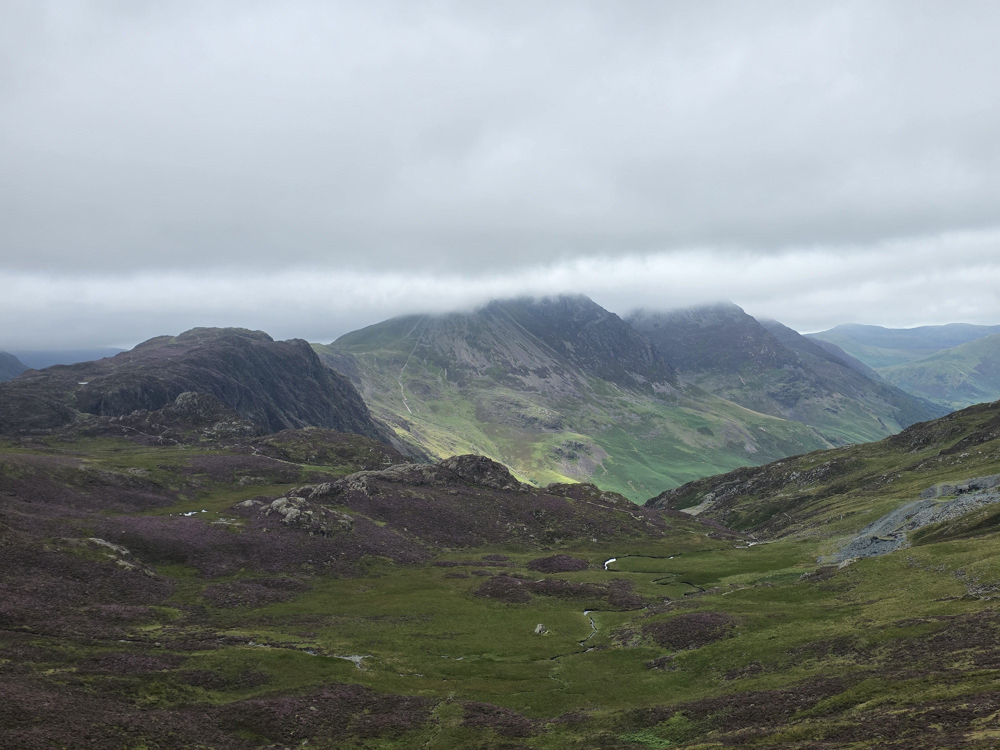

My First Hike
Location: Lake District
Every hike has a story. This is where mine begins.
Add your favourite memory from this hike here.
Favourite Memory
One of my favourite moments from this hike...
Favourite Memory

>One of my favourite moments from this hike...